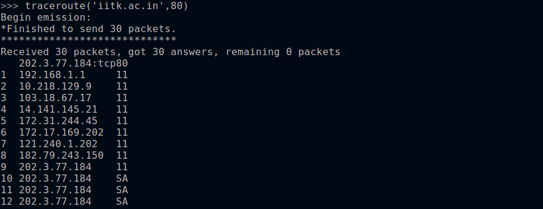

Traceroute
- Traceroute is a tool/technique to list all the routers that your packets go through to reach a target.
- The technique is to send series of packets to the target with Time to Live (TTL) set in such a way that each router on the path will have to notify you of the death of the packet.
- The traceroute technique is based on the way the IP protocol is designed. TTL value in IP header is seen as hop limit. Everytime a router recieves a packet to forward, it decrements the TTL by one and forwards the packet. When TTL reaches 0, the router will send a reply to the source machine indicating the packet has died.
- The technique behind various tools is same but the way they implement it slightly differs. Unix systems use UDP datagrams while the Windows tracert program uses ICMP and tcptraceroute uses TCP.
-
Most traceroute tools tend to send a packet with ceratin TTL value and wait for a reply before sending out the next packet which could slow down the whole process, especially when there is a network note that is unresponsive.
-
In this example, we are going to do a Standard ICMP Traceroute but we will send all our probes at the same time.
- One obvious question, “Where do we stop?” For this exercises we’ll just send packets till TTL 30 and that is a decent number to reach almost any node on Internet.
>>> ans,unans=sr(IP(dst="4.2.2.1",ttl=(1,10))/ICMP())
- Once, we receive all probe requests we can obtain results:
>>> ans.summary( lambda(s,r) : r.sprintf("%IP.src%"))
192.168.1.1
68.88.88.88
68.60.60.60
4.79.43.134
4.79.43.133
4.68.18.62
4.68.123.6
4.2.2.1
4.2.2.1
- Similarly, we can use TCP SYN traceroute to obtain similar results:
ans,unans=sr(IP(dst="4.2.2.1",ttl=(1,10))/TCP(dport=53,flags="S"))
- And again results would be:
>>> ans.summary( lambda(s,r) : r.sprintf("%IP.src%\t{ICMP:%ICMP.type%}\t{TCP:%TCP.flags%}"))
192.168.1.1 time-exceeded
68.86.90.162 time-exceeded
4.79.43.134 time-exceeded
4.79.43.133 time-exceeded
4.68.18.126 time-exceeded
4.68.123.38 time-exceeded
4.2.2.1 SA
- Scapy includes a built-in traceroute() function to perform same functionality as above. Here is an example of TCP SYN traceroute:
>>> traceroute("4.2.2.1")
Begin emission:
***********************Finished to send 30 packets.
****
Received 27 packets, got 27 answers, remaining 3 packets
4.2.2.1:tcp80
1 192.168.1.1 11
5 4.79.43.134 11
6 4.79.43.133 11
7 4.68.18.62 11
8 4.68.123.6 11
9 4.2.2.1 RA
10 4.2.2.1 RA
...
- We can perform a DNS traceroute by specifying a complete packet in l4 parameter of traceroute() function:
>>> ans,unans=traceroute("4.2.2.1",l4=UDP(sport=RandShort())/DNS(qd=DNSQR(qname="thesprawl.org")))
Begin emission:
..*....******...******.***...****Finished to send 30 packets.
*****...***...............................
Received 75 packets, got 28 answers, remaining 2 packets
4.2.2.1:udp53
1 192.168.1.1 11
4 68.86.90.162 11
5 4.79.43.134 11
6 4.79.43.133 11
7 4.68.18.62 11
8 4.68.123.6 11
9 4.2.2.1
...
- Similarly, IP Fragment traceroute can be emulated with this command:
>>> res,unans = sr(IP(dst="4.2.2.1", ttl=(5,10), flags="MF")
... /UDP(sport=RandShort( ), dport=53), timeout=125)
Note: I couldn't produce Type 11 Code 1 (Time Exceeded During Reassembly) ICMP error.
NAT detect
